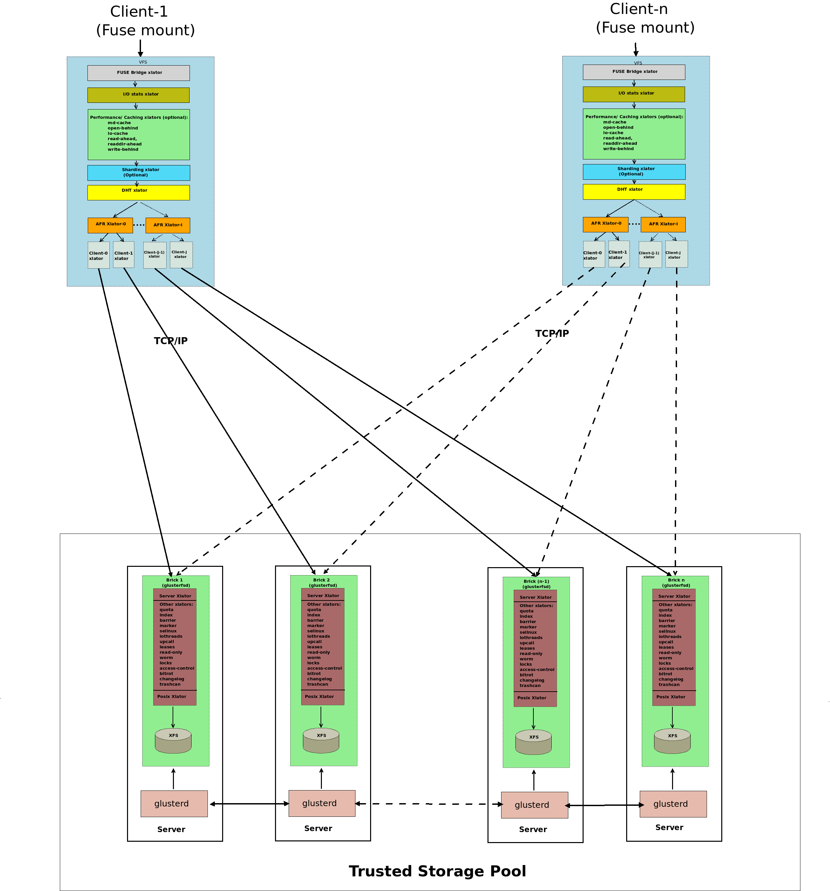
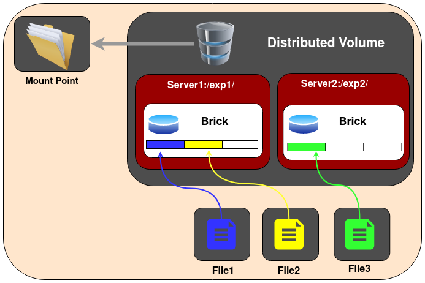

Architecture

A gluster volume is a collection of servers belonging to a Trusted Storage Pool. A management daemon (glusterd) runs on each server and manages a brick process (glusterfsd) which in turn exports the underlying on disk storage (XFS filesystem). The client process mounts the volume and exposes the storage from all the bricks as a single unified storage namespace to the applications accessing it. The client and brick processes' stacks have various translators loaded in them. I/O from the application is routed to different bricks via these translators.
Types of Volumes
Gluster file system supports different types of volumes based on the requirements. Some volumes are good for scaling storage size, some for improving performance and some for both.
1.Distributed Glusterfs Volume - This is the type of volume which is created by default if no volume type is specified. Here, files are distributed across various bricks in the volume. So file1 may be stored only in brick1 or brick2 but not on both. Hence there is no data redundancy. The purpose for such a storage volume is to easily & cheaply scale the volume size. However this also means that a brick failure will lead to complete loss of data and one must rely on the underlying hardware for data loss protection.

Create a Distributed Volume
gluster volume create NEW-VOLNAME [transport [tcp | rdma | tcp,rdma]] NEW-BRICK...
For example to create a distributed volume with four storage servers using TCP.
gluster volume create test-volume server1:/exp1 server2:/exp2 server3:/exp3 server4:/exp4
volume create: test-volume: success: please start the volume to access data
To display the volume info:
gluster volume info
Volume Name: test-volume
Type: Distribute
Status: Created
Number of Bricks: 4
Transport-type: tcp
Bricks:
Brick1: server1:/exp1
Brick2: server2:/exp2
Brick3: server3:/exp3
Brick4: server4:/exp4
2.Replicated Glusterfs Volume - In this volume we overcome the risk of data loss which is present in the distributed volume. Here exact copies of the data are maintained on all bricks. The number of replicas in the volume can be decided by client while creating the volume. So we need to have at least two bricks to create a volume with 2 replicas or a minimum of three bricks to create a volume of 3 replicas. One major advantage of such a volume is that even if one brick fails the data can still be accessed from its replicated bricks. Such a volume is used for better reliability and data redundancy.
Create a Replicated Volume
gluster volume create NEW-VOLNAME [replica COUNT] [transport [tcp |rdma | tcp,rdma]] NEW-BRICK...
For example, to create a replicated volume with three storage servers:
gluster volume create test-volume replica 3 transport tcp \
server1:/exp1 server2:/exp2 server3:/exp3
volume create: test-volume: success: please start the volume to access data
3.Distributed Replicated Glusterfs Volume - In this volume files are distributed across replicated sets of bricks. The number of bricks must be a multiple of the replica count. Also the order in which we specify the bricks is important since adjacent bricks become replicas of each other. This type of volume is used when high availability of data due to redundancy and scaling storage is required. So if there were eight bricks and replica count 2 then the first two bricks become replicas of each other then the next two and so on. This volume is denoted as 4x2. Similarly if there were eight bricks and replica count 4 then four bricks become replica of each other and we denote this volume as 2x4 volume.
Create the distributed replicated volume:
gluster volume create NEW-VOLNAME [replica COUNT] [transport [tcp | rdma | tcp,rdma]] NEW-BRICK...
For example, six node distributed replicated volume with a three-way mirror:
gluster volume create test-volume replica 3 transport tcp server1:/exp1 server2:/exp2 server3:/exp3 server4:/exp4 server5:/exp5 server6:/exp6
volume create: test-volume: success: please start the volume to access data
4.Dispersed Glusterfs Volume - Dispersed volumes are based on erasure codes. It stripes the encoded data of files, with some redundancy added, across multiple bricks in the volume. You can use dispersed volumes to have a configurable level of reliability with minimum space waste. The number of redundant bricks in the volume can be decided by clients while creating the volume. Redundant bricks determines how many bricks can be lost without interrupting the operation of the volume.
Create a dispersed volume:
gluster volume create test-volume [disperse [<COUNT>]] [disperse-data <COUNT>] [redundancy <COUNT>] [transport tcp | rdma | tcp,rdma] <NEW-BRICK>
For example, three node dispersed volume with level of redundancy 1, (2 + 1):
gluster volume create test-volume disperse 3 redundancy 1 server1:/exp1 server2:/exp2 server3:/exp3
volume create: test-volume: success: please start the volume to access data
5.Distributed Dispersed Glusterfs Volume - Distributed dispersed volumes are the equivalent to distributed replicated volumes, but using dispersed subvolumes instead of replicated ones. The number of bricks must be a multiple of the 1st subvol. The purpose for such a volume is to easily scale the volume size and distribute the load across various bricks.
Create a distributed dispersed volume:
gluster volume create [disperse [<COUNT>]] [disperse-data <COUNT>] [redundancy <COUNT>] [transport tcp | rdma | tcp,rdma] <NEW-BRICK>
For example, six node distributed dispersed volume with level of redundancy 1, 2 x (2 + 1) = 6:
gluster volume create test-volume disperse 3 redundancy 1 server1:/exp1 server2:/exp2 server3:/exp3 server4:/exp4 server5:/exp5 server6:/exp6
volume create: test-volume: success: please start the volume to access data
Note:
A dispersed volume can be created by specifying the number of bricks in a disperse set, by specifying the number of redundancy bricks, or both.
If disperse is not specified, or the
<COUNT>is missing, the entire volume will be treated as a single disperse set composed by all bricks enumerated in the command line.If redundancy is not specified, it is computed automatically to be the optimal value. If this value does not exist, it's assumed to be '1' and a warning message is shown:
# gluster volume create test-volume disperse 4 server{1..4}:/bricks/test-volume
There isn't an optimal redundancy value for this configuration. Do you want to create the volume with redundancy 1 ? (y/n)
In all cases where redundancy is automatically computed and it's not equal to '1', a warning message is displayed:
# gluster volume create test-volume disperse 6 server{1..6}:/bricks/test-volume
The optimal redundancy for this configuration is 2. Do you want to create the volume with this value ? (y/n)
redundancy must be greater than 0, and the total number of bricks must be greater than 2 * redundancy. This means that a dispersed volume must have a minimum of 3 bricks.
FUSE
GlusterFS is a userspace filesystem. The GluserFS developers opted for this approach in order to avoid the need to have modules in the Linux kernel.
As it is a userspace filesystem, to interact with kernel VFS, GlusterFS makes use of FUSE (File System in Userspace). For a long time, implementation of a userspace filesystem was considered impossible. FUSE was developed as a solution for this. FUSE is a kernel module that supports interaction between kernel VFS and non-privileged user applications and it has an API that can be accessed from userspace. Using this API, any type of filesystem can be written using almost any language you prefer as there are many bindings between FUSE and other languages.

Structural diagram of FUSE.
This shows a filesystem "hello world" that is compiled to create a binary "hello". It is executed with a filesystem mount point /tmp/fuse. Then the user issues a command ls -l on the mount point /tmp/fuse. This command reaches VFS via glibc and since the mount /tmp/fuse corresponds to a FUSE based filesystem, VFS passes it over to FUSE module. The FUSE kernel module contacts the actual filesystem binary "hello" after passing through glibc and FUSE library in userspace(libfuse). The result is returned by the "hello" through the same path and reaches the ls -l command.
The communication between FUSE kernel module and the FUSE library(libfuse) is via a special file descriptor which is obtained by opening /dev/fuse. This file can be opened multiple times, and the obtained file descriptor is passed to the mount syscall, to match up the descriptor with the mounted filesystem.
Translators
Translating translators:
- A translator converts requests from users into requests for storage.
*One to one, one to many, one to zero (e.g. caching)

- A translator can modify requests on the way through :
convert one request type to another ( during the request transfer amongst the translators) modify paths, flags, even data (e.g. encryption)
-
Translators can intercept or block the requests. (e.g. access control)
-
Or spawn new requests (e.g. pre-fetch)
How Do Translators Work?
- Shared Objects
- Dynamically loaded according to 'volfile'
dlopen/dlsync setup pointers to parents / children call init (constructor) call IO functions through fops.
- Conventions for validating/ passing options, etc.
- The configuration of translators (since GlusterFS 3.1) is managed through the gluster command line interface (cli), so you don't need to know in what order to graph the translators together.
Types of Translators
List of known translators with their current status.
| Translator Type | Functional Purpose |
|---|---|
| Storage | Lowest level translator, stores and accesses data from local file system. |
| Debug | Provide interface and statistics for errors and debugging. |
| Cluster | Handle distribution and replication of data as it relates to writing to and reading from bricks & nodes. |
| Encryption | Extension translators for on-the-fly encryption/decryption of stored data. |
| Protocol | Extension translators for client/server communication protocols. |
| Performance | Tuning translators to adjust for workload and I/O profiles. |
| Bindings | Add extensibility, e.g. The Python interface written by Jeff Darcy to extend API interaction with GlusterFS. |
| System | System access translators, e.g. Interfacing with file system access control. |
| Scheduler | I/O schedulers that determine how to distribute new write operations across clustered systems. |
| Features | Add additional features such as Quotas, Filters, Locks, etc. |
The default / general hierarchy of translators in vol files :

All the translators hooked together to perform a function is called a graph. The left-set of translators comprises of Client-stack.The right-set of translators comprises of Server-stack.
The glusterfs translators can be sub-divided into many categories, but two important categories are - Cluster and Performance translators :
One of the most important and the first translator the data/request has to go through is fuse translator which falls under the category of Mount Translators.
-
Cluster Translators:
- DHT(Distributed Hash Table)
- AFR(Automatic File Replication)
-
Performance Translators:
- io-cache
- io-threads
- md-cache
- O-B (open behind)
- QR (quick read)
- r-a (read-ahead)
- w-b (write-behind)
Other Feature Translators include:
- changelog
- locks - GlusterFS has locks translator which provides the following internal locking operations
called
inodelk,entrylk, which are used by afr to achieve synchronization of operations on files or directories that conflict with each other. - marker
- quota
Debug Translators
- trace - To trace the error logs generated during the communication amongst the translators.
- io-stats
DHT(Distributed Hash Table) Translator
What is DHT?
DHT is the real core of how GlusterFS aggregates capacity and performance across multiple servers. Its responsibility is to place each file on exactly one of its subvolumes unlike either replication (which places copies on all of its subvolumes) or striping (which places pieces onto all of its subvolumes). Its a routing function, not splitting or copying.
How DHT works?
The basic method used in DHT is consistent hashing. Each subvolume (brick) is assigned a range within a 32-bit hash space, covering the entire range with no holes or overlaps. Then each file is also assigned a value in that same space, by hashing its name. Exactly one brick will have an assigned range including the files hash value, and so the file should be on that brick. However, there are many cases where that wont be the case, such as when the set of bricks (and therefore the range assignment of ranges) has changed since the file was created, or when a brick is nearly full. Much of the complexity in DHT involves these special cases, which well discuss in a moment.
When you open() a file, the distribute translator is giving one piece of information to find your file, the file-name. To determine where that file is, the translator runs the file-name through a hashing algorithm in order to turn that file-name into a number.
A few Observations of DHT hash-values assignment:
- The assignment of hash ranges to bricks is determined by extended attributes stored on directories, hence distribution is directory-specific.
- Consistent hashing is usually thought of as hashing around a circle, but in GlusterFS its more linear. Theres no need to wrap around at zero, because theres always a break (between one bricks range and anothers) at zero.
- If a brick is missing, there will be a hole in the hash space. Even worse, if hash ranges are reassigned while a brick is offline, some of the new ranges might overlap with the (now out of date) range stored on that brick, creating a bit of confusion about where files should be.
AFR(Automatic File Replication) Translator
The Automatic File Replication (AFR) translator in GlusterFS makes use of the extended attributes to keep track of the file operations.It is responsible for replicating the data across the bricks.
Responsibilities of AFR
Its responsibilities include the following:
- Maintain replication consistency (i.e. Data on both the bricks should be same, even in the cases where there are operations happening on same file/directory in parallel from multiple applications/mount points as long as all the bricks in replica set are up).
- Provide a way of recovering data in case of failures as long as there is at least one brick which has the correct data.
- Serve fresh data for read/stat/readdir etc.
Geo-Replication
Geo-replication provides asynchronous replication of data across geographically distinct locations and was introduced in Glusterfs 3.2. It mainly works across WAN and is used to replicate the entire volume unlike AFR which is intra-cluster replication. This is mainly useful for backup of entire data for disaster recovery.
Geo-replication uses a primary-secondary model, whereby replication occurs between a Primary and a Secondary, both of which should be GlusterFS volumes. Geo-replication provides an incremental replication service over Local Area Networks (LANs), Wide Area Network (WANs), and across the Internet.
Geo-replication over LAN
You can configure Geo-replication to mirror data over a Local Area Network.

Geo-replication over WAN
You can configure Geo-replication to replicate data over a Wide Area Network.

Geo-replication over Internet
You can configure Geo-replication to mirror data over the Internet.

Multi-site cascading Geo-replication
You can configure Geo-replication to mirror data in a cascading fashion across multiple sites.

There are mainly two aspects while asynchronously replicating data:
1.Change detection - These include file-operation necessary details. There are two methods to sync the detected changes:
i. Changelogs - Changelog is a translator which records necessary details for the fops that occur. The changes can be written in binary format or ASCII. There are three category with each category represented by a specific changelog format. All three types of categories are recorded in a single changelog file.
Entry - create(), mkdir(), mknod(), symlink(), link(), rename(), unlink(), rmdir()
Data - write(), writev(), truncate(), ftruncate()
Meta - setattr(), fsetattr(), setxattr(), fsetxattr(), removexattr(), fremovexattr()
In order to record the type of operation and entity underwent, a type identifier is used. Normally, the entity on which the operation is performed would be identified by the pathname, but we choose to use GlusterFS internal file identifier (GFID) instead (as GlusterFS supports GFID based backend and the pathname field may not always be valid and other reasons which are out of scope of this document). Therefore, the format of the record for the three types of operation can be summarized as follows:
Entry - GFID + FOP + MODE + UID + GID + PARGFID/BNAME [PARGFID/BNAME]
Meta - GFID of the file
Data - GFID of the file
GFID's are analogous to inodes. Data and Meta fops record the GFID of the entity on which the operation was performed, thereby recording that there was a data/metadata change on the inode. Entry fops record at the minimum a set of six or seven records (depending on the type of operation), that is sufficient to identify what type of operation the entity underwent. Normally this record includes the GFID of the entity, the type of file operation (which is an integer [an enumerated value which is used in Glusterfs]) and the parent GFID and the basename (analogous to parent inode and basename).
Changelog file is rolled over after a specific time interval. We then perform processing operations on the file like converting it to understandable/human readable format, keeping private copy of the changelog etc. The library then consumes these logs and serves application requests.
ii. Xsync - Marker translator maintains an extended attribute xtime for each file and directory. Whenever any update happens it would update the xtime attribute of that file and all its ancestors. So the change is propagated from the node (where the change has occurred) all the way to the root.

Consider the above directory tree structure. At time T1 the primary and secondary were in sync each other.

At time T2 a new file File2 was created. This will trigger the xtime marking (where xtime is the current timestamp) from File2 upto to the root, i.e, the xtime of File2, Dir3, Dir1 and finally Dir0 all will be updated.
Geo-replication daemon crawls the file system based on the condition that xtime(primary) > xtime(secondary). Hence in our example it would crawl only the left part of the directory structure since the right part of the directory structure still has equal timestamp. Although the crawling algorithm is fast we still need to crawl a good part of the directory structure.
2.Replication - We use rsync for data replication. Rsync is an external utility which will calculate the diff of the two files and sends this difference from source to sync.
Overall working of GlusterFS
As soon as GlusterFS is installed in a server node, a gluster management daemon(glusterd) binary will be created. This daemon should be running in all participating nodes in the cluster. After starting glusterd, a trusted server pool(TSP) can be created consisting of all storage server nodes (TSP can contain even a single node). Now bricks which are the basic units of storage can be created as export directories in these servers. Any number of bricks from this TSP can be clubbed together to form a volume.
Once a volume is created, a glusterfsd process starts running in each of the participating brick. Along with this, configuration files known as vol files will be generated inside /var/lib/glusterd/vols/. There will be configuration files corresponding to each brick in the volume. This will contain all the details about that particular brick. Configuration file required by a client process will also be created. Now our filesystem is ready to use. We can mount this volume on a client machine very easily as follows and use it like we use a local storage:
mount.glusterfs<IP or hostname>:<volume_name><mount_point>
IP or hostname can be that of any node in the trusted server pool in which the required volume is created.
When we mount the volume in the client, the client glusterfs process communicates with the servers glusterd process. Server glusterd process sends a configuration file (vol file) containing the list of client translators and another containing the information of each brick in the volume with the help of which the client glusterfs process can now directly communicate with each bricks glusterfsd process. The setup is now complete and the volume is now ready for client's service.

When a system call (File operation or Fop) is issued by client in the mounted filesystem, the VFS (identifying the type of filesystem to be glusterfs) will send the request to the FUSE kernel module. The FUSE kernel module will in turn send it to the GlusterFS in the userspace of the client node via /dev/fuse (this has been described in FUSE section). The GlusterFS process on the client consists of a stack of translators called the client translators which are defined in the configuration file(vol file) sent by the storage server glusterd process. The first among these translators being the FUSE translator which consists of the FUSE library(libfuse). Each translator has got functions corresponding to each file operation or fop supported by glusterfs. The request will hit the corresponding function in each of the translators. Main client translators include:
- FUSE translator
- DHT translator- DHT translator maps the request to the correct brick that contains the file or directory required.
- AFR translator- It receives the request from the previous translator and if the volume type is replicate, it duplicates the request and passes it on to the Protocol client translators of the replicas.
- Protocol Client translator- Protocol Client translator is the last in the client translator stack. This translator is divided into multiple threads, one for each brick in the volume. This will directly communicate with the glusterfsd of each brick.
In the storage server node that contains the brick in need, the request again goes through a series of translators known as server translators, main ones being:
- Protocol server translator
- POSIX translator
The request will finally reach VFS and then will communicate with the underlying native filesystem. The response will retrace the same path.